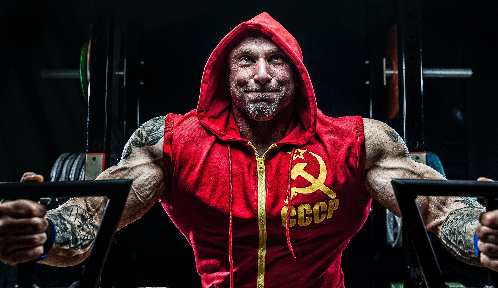

가슴은 많은 반복보다 고중량에 잘 자라는 근육인 만큼 횟수, 세트 수에 욕심을 내지 않는다. 어깨를 망쳐먹는 지름길이다. 대충 100번 든 것보다 제대로 든 10번이 낫다. 보조운동의 비중을 높여 강도를 안배한 구성이 아닌 한 주당 본운동 20세트 이상은 권한지 않는다.
상부가슴운동+삼각근 운동, 하부가슴운동+삼두근 운동은 중복 범위가 크기 때문에 비슷한 성격의 종목을 연이어 하지 않는다. (ex 인클라인 벤치프레스 직후 오버헤드프레스를 하는 등) 다만 복합성-고립성처럼 성격이 상이한 운동은 연이어 하는 것도 시간을 효율적으로 쓰는 방법이다. (벤치프레스 직후 삼두 프레스다운을 하는 것)